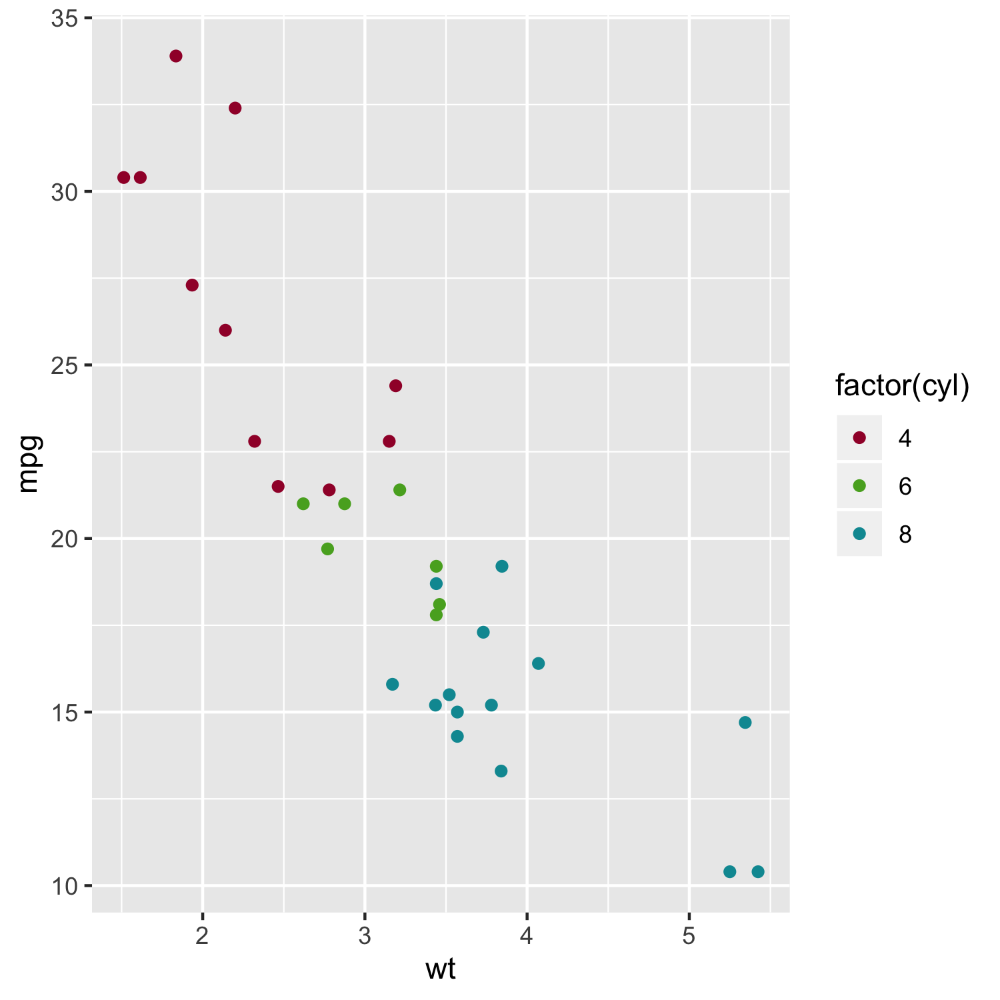

Overview
This package allows to query colors from a palette inspired from RWTH Aachen corporate design using R. The color palette contains 13 different colors, each in 5 different intensities (100%, 75%, 50%, 25% and 10%; see figure below).
Disclaimer
The color palette makes no claim to completeness or correctness of the official RWTH Aachen corporate design.
Installation
# install the development version from GitHub # install.packages("devtools") devtools::install_github("christianholland/AachenColorPalette")
Usage
Query colors by combining color name in lower case (check figure below for color names) and color intensity. For colors with 100% intensity the color name alone is sufficient.
# load package
library(AachenColorPalette)
# show the color palette
display_aachen_color()
# query single or multiple colors
aachen_color("blue")
[1] "#00549F"
aachen_color(c("green", "green75", "green50", "green25", "green10"))
[1] "#57AB27" "#8DC060" "#B8D698" "#DDEBCE" "#F2F7EC"
Example
library(ggplot2) library(AachenColorPalette) ggplot(mtcars, aes(x = wt, y = mpg, color=factor(cyl))) + geom_point() + scale_color_manual(values = aachen_color(c("bordeaux", "green", "turquoise")))
